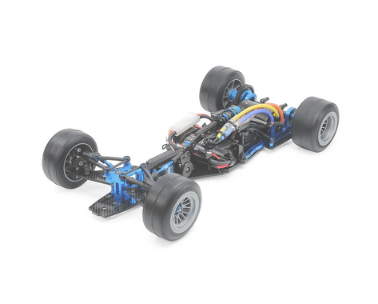

タミヤ TRF104 シャーシキット

引用元画像：タミヤ公式サイト
📋 基本情報
| メーカー | タミヤ（Tamiya） |
|---|---|
| 機種名 | TRF104 |
| 型番 | 42389 |
| 発売時期 | 2025年6月28日（土）ごろ発売予定 |
| 生産状況 | 現行販売中（最新モデル） |
| カテゴリー | ラジコンカー（1/10スケール 電動RCカー） |
| サブカテゴリー | フォーミュラカー（F1 / ハイエンド競技用） |
| 価格 | 54,780円（税込） |
📏 シャーシスペック
| 全長 | 329mm |
|---|---|
| 全幅 | 200mm |
| 全高 | 87mm（車高最低時） |
| ホイールベース | 235mm、239mm、243mm（調整可能） |
| トレッド | フロント178mm / リヤ180mm（調整可能） |
| フレーム | 2.5mm厚カーボンロワデッキ + アルミシャーシ |
| バッテリー | LF（Li-Fe）バッテリー対応（2セル 6.6V） |
⚙️ 駆動系
| 駆動方式 | シャフトドライブ2WD（後輪駆動） |
|---|---|
| デフギヤ | ボールデフ（オイル封入式） |
| ギヤ比 | 4.23:1（キット標準） |
| モーター | 540タイプ（ブラシレスモーター推奨） |
| ESC | 別売（ブースト機能対応ESC推奨） |
🔧 サスペンション
| フロント形式 | ダブルウィッシュボーン |
|---|---|
| フロントロアアーム | 2.5mmカーボンプレート |
| フロントアッパーアーム | 樹脂製（TRF421由来設計） |
| リヤ形式 | モーターマウント中央ロール方式 |
| ダンパー | TRFダンパー + 専用ロールダンパー |
| キャンバー角 | +1度 ~ -3度（調整可能） |
| キャスター角 | 6度 / 9度 / 12度（調整可能） |
| ステアリング | ロープロファイルサーボ対応 |
💡 特徴
タミヤF1シャーシの最高峰
- 約7年ぶりのF1カテゴリー刷新モデル
- TRF（Tamiya Racing Factory）ブランドの最新作
- ハイエンドレース用に特化した設計
2.5mm厚カーボンロワデッキ
- 高剛性と軽量化を両立
- LF（Li-Fe）バッテリー搭載に最適化
- 低重心レイアウトでコーナリング性能向上
高精度サスペンション調整機構
- フロント：カーボンロアアーム + 樹脂アッパーアーム（異素材構成）
- キャンバー角・キャスター角の細かな調整が可能
- リヤ：モーターマウント中央ロール方式で優れた路面追従性
- ロール制御にスプリング + 専用ロールダンパー
- ピッチ制御にFRPプレート + TRFダンパー
調整の自由度
- ホイールベース：235mm / 239mm / 243mm（3段階調整）
- トレッド幅調整可能
- サスペンションジオメトリのカスタマイズ対応
🔧 ぽすとそに工房での修理実績
修理難易度
★★★★☆（難しい、上級者向け）
⚠️ 重要な注意
当工房では本機種の取り扱い実績がまだございません。
ただし、組み立て説明書を確認したところ、何かあっても修理可能な範疇と判断しています。
修理難易度は「念のため難しい」に分類していますが、TRFシリーズの経験がある当工房であれば対応可能です。
想定される注意点
- ハイエンド競技用シャーシのため、精密な組み立てが必要
- カーボンパーツの取り扱いに注意（締めすぎ厳禁）
- LFバッテリー専用設計のため、バッテリー選択が重要
- 細かなセッティングが性能に直結するため、初心者には難易度が高い
修理・メンテナンスのポイント（想定）
- カーボンパーツのビス締めは適正トルクで（締めすぎ厳禁）
- ボールデフのメンテナンスが重要（オイル管理）
- サスペンション調整は段階的に行う
- TRFダンパーのオイル粘度管理
- 定期的な各部のボールコネクター点検
その他の特徴
- シャーシキットのため、ボディ・モーター・タイヤ・RC装置は別売
- ブラシレスモーター + ブースト機能付きESC推奨
- ロープロファイルサーボ必須
- F1専用ホイール・タイヤが必要
- ハイエンドレース向けで初心者には不向き
走行に必要なもの（別売）
- 2チャンネルプロポセット（ロープロファイルサーボ付き）
- ESC（ブースト機能対応推奨）
- 540サイズブラシレスモーター
- LFバッテリー（2セル 6.6V）+ 対応充電器
- F1ボディパーツセット
- F1ホイール・タイヤ
- タミヤPS塗料（ボディ塗装用）